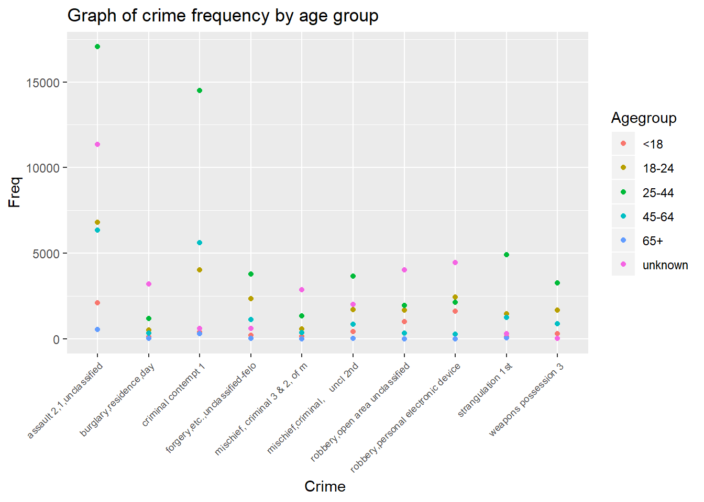
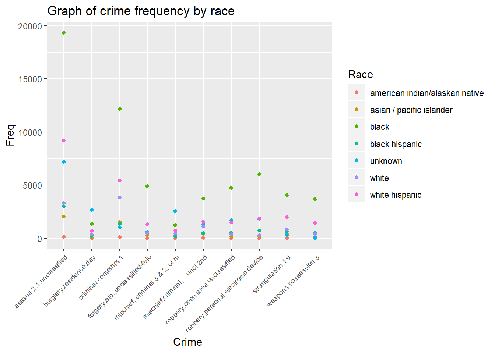
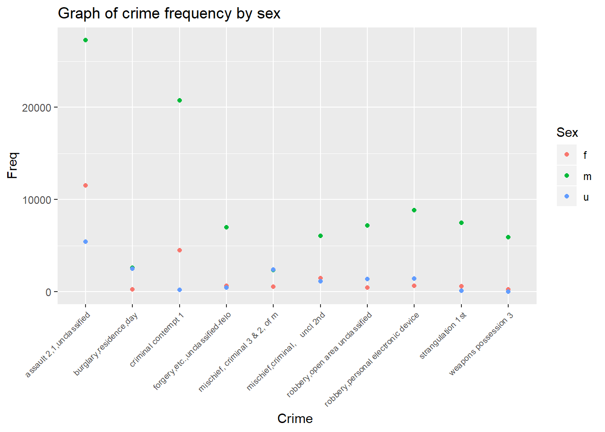

library(tidyverse)
crime_nyc = readRDS(file = "datasets/nyc_felony_crimes.rds")
crime_nyc %>% filter(law_cat_cd == "felony") %>% distinct(pd_cd, pd_desc) %>%
mutate(x = str_detect(pd_desc, "rape")) %>%
Viewlibrary(tidyverse)Crime category by race/ethnicity, age, sex and other sociodemographics ** top ten offense, general chracteristics top 5, general characteristics filter out unknown and analyze top 5 crimes for unknowns**
Removing missing variables
com_crime_nyc = crime_nyc %>%
janitor::clean_names(dat = .) %>%
filter(!is.na(susp_sex)) %>%
filter(!is.na(susp_age_group)) %>%
filter(!is.na(vic_sex)) %>%
filter(!is.na(vic_age_group)) %>%
filter(!is.na(vic_race)) %>%
filter(!is.na(susp_race))Highest number of crimes (top 5)
com_crime_nyc %>%
distinct(pd_desc) %>%
count()## # A tibble: 1 x 1
## n
## <int>
## 1 213com_crime_nyc %>%
filter(law_cat_cd == "felony") %>%
group_by(pd_desc, pd_cd) %>%
summarise(number = n()) %>%
ungroup() %>%
top_n(10, number) %>%
arrange(desc(number)) %>%
knitr::kable() | pd_desc | pd_cd | number |
|---|---|---|
| assault 2,1,unclassified | 109 | 44270 |
| criminal contempt 1 | 198 | 25455 |
| robbery,personal electronic device | 386 | 10930 |
| robbery,open area unclassified | 397 | 8998 |
| mischief,criminal, uncl 2nd | 269 | 8675 |
| strangulation 1st | 105 | 8159 |
| forgery,etc.,unclassified-felo | 729 | 8115 |
| weapons possession 3 | 793 | 6217 |
| burglary,residence,day | 221 | 5381 |
| mischief, criminal 3 & 2, of m | 267 | 5333 |
Suspect Age
com_crime_nyc %>%
group_by(susp_age_group) %>%
summarise(number = n()) %>%
ungroup() %>%
top_n(5, number) %>%
arrange(desc(number)) %>%
knitr::kable() | susp_age_group | number |
|---|---|
| unknown | 90145 |
| 25-44 | 88550 |
| 18-24 | 41309 |
| 45-64 | 27591 |
| <18 | 11531 |
Suspect Sex
com_crime_nyc %>%
group_by(susp_sex) %>%
summarise(number = n()) %>%
ungroup() %>%
top_n(3, number) %>%
arrange(desc(number)) %>%
knitr::kable() | susp_sex | number |
|---|---|
| m | 171270 |
| u | 56662 |
| f | 32782 |
Victim’s sex
com_crime_nyc %>%
group_by(vic_sex) %>%
summarise(number = n()) %>%
ungroup() %>%
top_n(3, number) %>%
arrange(desc(number)) %>%
knitr::kable() | vic_sex | number |
|---|---|
| f | 104643 |
| m | 99208 |
| e | 32145 |
Victim’s age
com_crime_nyc %>%
group_by(vic_age_group) %>%
summarise(number = n()) %>%
ungroup() %>%
top_n(5, number) %>%
arrange(desc(number)) %>%
knitr::kable() | vic_age_group | number |
|---|---|
| 25-44 | 94015 |
| unknown | 62936 |
| 45-64 | 44114 |
| 18-24 | 32805 |
| <18 | 14706 |
Suspect’s age
com_crime_nyc %>%
group_by(susp_race) %>%
summarise(number = n()) %>%
ungroup() %>%
top_n(5, number) %>%
arrange(desc(number)) %>%
knitr::kable() | susp_race | number |
|---|---|
| black | 106066 |
| unknown | 66282 |
| white hispanic | 43845 |
| white | 21080 |
| black hispanic | 14385 |
Victim’s race
com_crime_nyc %>%
group_by(vic_race) %>%
summarise(number = n()) %>%
ungroup() %>%
top_n(5, number) %>%
arrange(desc(number)) %>%
knitr::kable()| vic_race | number |
|---|---|
| black | 72052 |
| unknown | 68123 |
| white hispanic | 49005 |
| white | 40332 |
| asian / pacific islander | 19303 |
Suspect’s race
com_crime_nyc %>%
group_by(pd_desc, susp_race) %>%
summarise(number = n()) %>%
ungroup() %>%
top_n(5, number) %>%
arrange(desc(number)) %>%
knitr::kable()| pd_desc | susp_race | number |
|---|---|---|
| assault 2,1,unclassified | black | 19349 |
| criminal contempt 1 | black | 12186 |
| assault 2,1,unclassified | white hispanic | 9213 |
| assault 2,1,unclassified | unknown | 7201 |
| robbery,personal electronic device | black | 6029 |
com_crime_nyc %>%
group_by(susp_race, vic_race) %>%
summarise(number = n()) %>%
ungroup() %>%
top_n(5, number) %>%
arrange(desc(number)) %>%
knitr::kable()| susp_race | vic_race | number |
|---|---|---|
| black | black | 48186 |
| black | unknown | 30387 |
| white hispanic | white hispanic | 19906 |
| unknown | black | 16444 |
| unknown | white | 14946 |
com_crime_nyc %>%
group_by(susp_race, pd_desc) %>%
summarise(number = n()) %>%
ungroup() %>%
top_n(5, number) %>%
arrange(desc(number)) %>%
knitr::kable()| susp_race | pd_desc | number |
|---|---|---|
| black | assault 2,1,unclassified | 19349 |
| black | criminal contempt 1 | 12186 |
| white hispanic | assault 2,1,unclassified | 9213 |
| unknown | assault 2,1,unclassified | 7201 |
| black | robbery,personal electronic device | 6029 |
com_crime_nyc %>%
group_by(pd_desc, susp_age_group) %>%
summarise(number = n()) %>%
ungroup() %>%
top_n(5, number) %>%
arrange(desc(number)) %>%
knitr::kable() | pd_desc | susp_age_group | number |
|---|---|---|
| assault 2,1,unclassified | 25-44 | 17072 |
| criminal contempt 1 | 25-44 | 14486 |
| assault 2,1,unclassified | unknown | 11356 |
| assault 2,1,unclassified | 18-24 | 6801 |
| assault 2,1,unclassified | 45-64 | 6350 |
filter out unknown and analyze top 5 crimes for unknowns
filter(com_crime_nyc, susp_age_group == 'unknown') %>%
group_by(pd_cd) %>%
summarise(n = n()) %>%
filter() %>%
knitr::kable() | pd_cd | n |
|---|---|
| 103 | 4 |
| 104 | 2 |
| 105 | 311 |
| 106 | 119 |
| 107 | 3 |
| 108 | 20 |
| 109 | 11356 |
| 110 | 21 |
| 112 | 12 |
| 117 | 1991 |
| 125 | 16 |
| 153 | 80 |
| 155 | 27 |
| 157 | 519 |
| 159 | 119 |
| 164 | 26 |
| 166 | 2 |
| 168 | 219 |
| 177 | 173 |
| 178 | 1 |
| 179 | 25 |
| 183 | 13 |
| 185 | 18 |
| 186 | 6 |
| 187 | 5 |
| 193 | 7 |
| 197 | 50 |
| 198 | 620 |
| 199 | 15 |
| 204 | 53 |
| 211 | 760 |
| 213 | 2123 |
| 214 | 264 |
| 221 | 3193 |
| 223 | 2515 |
| 224 | 909 |
| 231 | 483 |
| 233 | 330 |
| 234 | 56 |
| 241 | 78 |
| 243 | 199 |
| 244 | 61 |
| 261 | 6 |
| 263 | 254 |
| 264 | 95 |
| 265 | 1 |
| 266 | 20 |
| 267 | 2877 |
| 268 | 83 |
| 269 | 2016 |
| 273 | 13 |
| 285 | 1 |
| 293 | 2 |
| 360 | 70 |
| 361 | 197 |
| 363 | 58 |
| 365 | 16 |
| 366 | 188 |
| 367 | 178 |
| 371 | 13 |
| 373 | 5 |
| 375 | 44 |
| 377 | 294 |
| 379 | 65 |
| 380 | 142 |
| 381 | 1 |
| 382 | 532 |
| 383 | 331 |
| 384 | 883 |
| 385 | 41 |
| 386 | 4451 |
| 387 | 150 |
| 388 | 1020 |
| 389 | 314 |
| 390 | 587 |
| 391 | 151 |
| 392 | 56 |
| 393 | 7 |
| 394 | 190 |
| 395 | 13 |
| 396 | 481 |
| 397 | 4019 |
| 398 | 319 |
| 399 | 552 |
| 401 | 362 |
| 402 | 1568 |
| 403 | 1154 |
| 404 | 1505 |
| 405 | 1266 |
| 406 | 1041 |
| 407 | 321 |
| 408 | 604 |
| 409 | 662 |
| 410 | 968 |
| 411 | 923 |
| 412 | 1963 |
| 414 | 177 |
| 415 | 1158 |
| 416 | 658 |
| 417 | 641 |
| 418 | 733 |
| 419 | 637 |
| 420 | 629 |
| 421 | 3796 |
| 422 | 1069 |
| 423 | 2 |
| 424 | 1051 |
| 425 | 1102 |
| 426 | 151 |
| 428 | 145 |
| 430 | 574 |
| 431 | 33 |
| 432 | 254 |
| 433 | 1707 |
| 434 | 37 |
| 435 | 41 |
| 437 | 499 |
| 438 | 2595 |
| 439 | 1917 |
| 441 | 3503 |
| 442 | 14 |
| 443 | 750 |
| 445 | 2 |
| 450 | 52 |
| 451 | 740 |
| 455 | 30 |
| 457 | 695 |
| 461 | 232 |
| 489 | 111 |
| 493 | 2 |
| 494 | 7 |
| 498 | 2 |
| 500 | 3 |
| 503 | 3 |
| 512 | 2 |
| 515 | 7 |
| 519 | 1 |
| 520 | 2 |
| 521 | 11 |
| 557 | 1 |
| 568 | 3 |
| 586 | 2 |
| 588 | 1 |
| 594 | 7 |
| 596 | 78 |
| 640 | 140 |
| 644 | 40 |
| 663 | 9 |
| 664 | 1 |
| 665 | 88 |
| 674 | 1 |
| 694 | 1 |
| 696 | 8 |
| 697 | 3 |
| 698 | 1 |
| 708 | 116 |
| 711 | 4 |
| 723 | 5 |
| 724 | 1 |
| 725 | 2 |
| 727 | 8 |
| 729 | 608 |
| 739 | 3128 |
| 760 | 3 |
| 772 | 41 |
| 779 | 14 |
| 781 | 5 |
| 792 | 42 |
| 793 | 42 |
| 844 | 21 |
| 847 | 64 |
| NA | 5 |
select top 10 crimes into a new dataset
top_ten_crime = com_crime_nyc %>%
group_by(pd_desc, pd_cd) %>%
summarise(number = n()) %>%
ungroup() %>%
top_n(10, number)
# arrange(desc(number)) %>%mydataextract3 = list()
cc = top_ten_crime$pd_cd
for(j in 1:length(cc)){
ind = cc[j]
#mydataextract = com_crime_nyc[com_crime_nyc$pd_desc == cc, ]
mydataextract3[[j]] = com_crime_nyc[which(com_crime_nyc$pd_cd == ind, arr.ind = TRUE ), ]
mydataextract4 = do.call(rbind, mydataextract3)
} # has 397,023 obsconsider suspects demographics by the top ten crimes suspect age group
table(mydataextract4$susp_age_group)##
## -2 -67 <18 1014 1016 18-24 2016 2017 25-44
## 1 1 6491 1 1 23252 2 2 53784
## 45-64 65+ 926 940 945 unknown
## 17419 1083 1 1 1 29493sort(table(mydataextract4$susp_age_group))##
## -2 -67 1014 1016 926 940 945 2016 2017
## 1 1 1 1 1 1 1 2 2
## 65+ <18 45-64 18-24 unknown 25-44
## 1083 6491 17419 23252 29493 53784#keep age groups < 18, 18-24, 25-44, 45-64, 65+, unknown
agegroup=c('<18', '45-64', '18-24', 'unknown', '25-44', '65+' )
mydata=mydataextract4[mydataextract4$susp_age_group %in% agegroup,]
suspect_agetopten=table(mydata$pd_desc,mydata$susp_age_group)suspect_agetopten2=as.data.frame(suspect_agetopten)
mycolnames=c('Crime', 'Agegroup', 'Freq')
colnames(suspect_agetopten2)=mycolnames
suspect_agetopten2 %>%
group_by(Agegroup, Crime) %>%
ggplot(aes(x = Crime, y = Freq, color = Agegroup)) +
geom_point() +
# geom_smooth(se=FALSE) +
labs(
title = "Graph of crime frequency by age group",
x = "Crime ",
y = "Freq"
) +
theme(axis.text.x = element_text(angle = 45, size = 7, hjust = 1))
consider suspects demographics by the top ten crimes. suspect race
table(mydataextract4$susp_race)##
## american indian/alaskan native asian / pacific islander
## 339 5436
## black black hispanic
## 61228 8165
## unknown white
## 19207 11434
## white hispanic
## 25724sort(table(mydataextract4$susp_race))##
## american indian/alaskan native asian / pacific islander
## 339 5436
## black hispanic white
## 8165 11434
## unknown white hispanic
## 19207 25724
## black
## 61228#keep age groups < 18, 18-24, 25-44, 45-64, 65+, unknown
suspect_racetopten=table(mydata$pd_desc,mydata$susp_race)suspect_racetopten2=as.data.frame(suspect_racetopten)
mycolnames=c('Crime', 'Race', 'Freq')
colnames(suspect_racetopten2)=mycolnames
suspect_racetopten2 %>%
group_by(Race, Crime) %>%
ggplot(aes(x = Crime, y = Freq, color = Race)) +
geom_point() +
# geom_smooth(se=FALSE) +
labs(
title = "Graph of crime frequency by race",
x = "Crime ",
y = "Freq"
) +
theme(axis.text.x = element_text(angle = 45, size = 7, hjust = 1))
sex
table(mydataextract4$susp_sex)##
## f m u
## 20936 95522 15075sort(table(mydataextract4$susp_sex))##
## u f m
## 15075 20936 95522#keep age groups < 18, 18-24, 25-44, 45-64, 65+, unknown
suspect_sextopten=table(mydata$pd_desc,mydata$susp_sex)
suspect_sextopten##
## f m u
## assault 2,1,unclassified 11512 27308 5444
## burglary,residence,day 259 2615 2507
## criminal contempt 1 4505 20737 210
## forgery,etc.,unclassified-felo 661 7013 441
## mischief, criminal 3 & 2, of m 576 2337 2420
## mischief,criminal, uncl 2nd 1477 6070 1128
## robbery,open area unclassified 444 7191 1362
## robbery,personal electronic device 651 8840 1439
## strangulation 1st 601 7461 96
## weapons possession 3 249 5942 26suspect_sextopten2=as.data.frame(suspect_sextopten)
mycolnames=c('Crime', 'Sex', 'Freq')
colnames(suspect_sextopten2)=mycolnames
suspect_sextopten2 %>%
group_by(Sex, Crime) %>%
ggplot(aes(x = Crime, y = Freq, color = Sex)) +
geom_point() +
# geom_smooth(se=FALSE) +
labs(
title = "Graph of crime frequency by sex",
x = "Crime ",
y = "Freq"
) +
theme(axis.text.x = element_text(angle = 45, size = 7, hjust = 1))